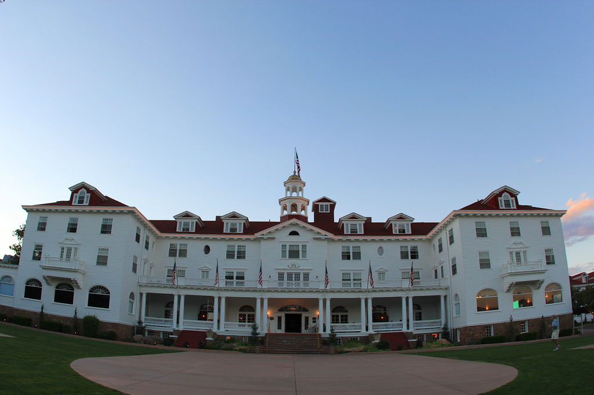
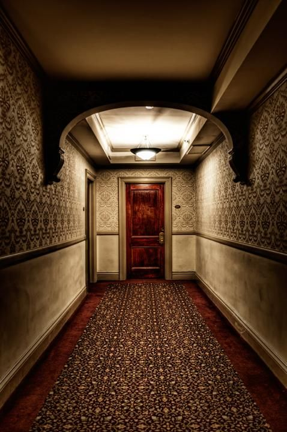

Have you ever been to a hotel that is based on a movie and is haunted? Well if so, then you should come to the Stanley Hotel in Estes Park, Colorado! The Stanley Hotel holds history that will creep you out. A place where The Shining was inspired, the Stanley Hotel is where many hauntings have been made. If you stay a night at the Stanley Hotel, it will be a night to remember.
The Stanley Hotel looks beautiful on the outside, but in the inside, you never know what haunting are in store for you. Some places in the hotel that are haunted are:
These places in the hotel have had the most famous hauntings. Room 217 is a great place to check out if you want to get the best haunting experience. Room 217 is most known for bringing the inspriation to Stephen King for his book, The Shining. This room was where Stephen King and his wife stayed for a night. But that one night and nightmare sparked the author's mind for his famous book. When you first walk through the haunted hotel's doors, the Grand Staircase is the first place you can see. The beautiful and decorated staircase is where many ghosts have been sited. One famous story of the Grand Staircase is in 2016, a tourist took a picture of the beauty of the staircase. When looking at the picture that was taken, there is a image of a woman that looked like a ghost! The tourist swore that there wasn't a woman at the top of the stairs. Lastly, the Concert Hall is most famously known for the haunting of the ghost named Flora Stanley. Flora Stanley was the hotel founder. She haunts and plays the piano in the Concert Hall.
If you are not sure about going to th Stanley Hotel, below is reivews that pervious tourists have said about the hotel:
The Stanley Hotel was worth the travel and I had a better time than I thought I was going to have! I highly recommend going to this hotel and take the haunted tours. I would review the hotel 5 out of 5 stars!
Review by Stacy Bee
The Stanley Hotel is a beautiful but definetly haunted hotel. If you like to be scared, this hotel is for you! I would review the Stanley Hotel 5 out of 5 stars!
Review by Brian Treetops
The Stanley Hotel is awesome! I would go back a hundred more times. There are so many haunted rooms and ghost storys. I give the hotel a 5 out of 5 stars.
Review by Shawn Bradley
If you are interested in booking a room at the Stanley Hotel, you can contact the Panda Travel Agency at: